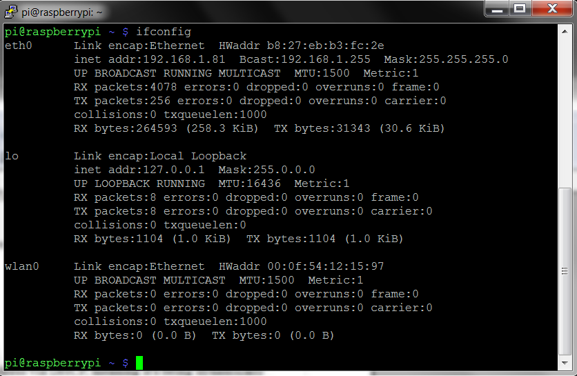
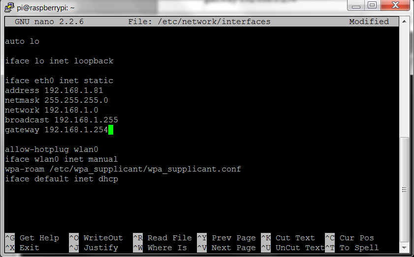
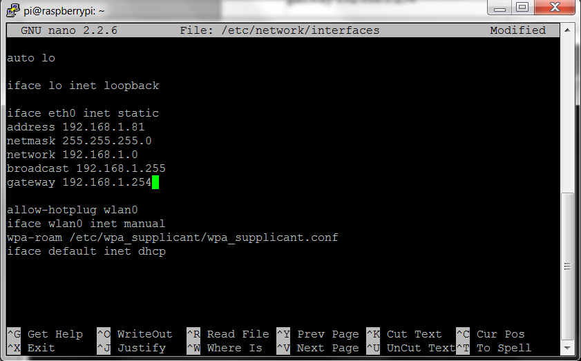

Poner IP estática
Para poner la IP estática se tiene que editar tan solo un archivo /etc/network/interfaces. Antes de editarlo vamos a ver que contiene ese fichero para ello ponemos este comando:
cat /etc/network/interfaces
Bien que es lo que hay que cambiar pues la línea que dice iface eth0 inet dhcp, bien diréis que significa esa línea pues significa que la IP que tiene la coge automáticamente por el servidor DHCP, normalmente el router. Antes de cambiar nada nos hace falta cierta información antes habrá que apuntarla en un papel o tener buena memoria, ya que se necesitará para ponerla en dicho archivo. Para ello tecleamos en la terminal ifconfig. 
Lo que interesa es la parte de eth0 que es la conexión ethernet. para ser más especifíco hay que apuntar lo siguiente:
- inet addr - 192.168.1.81 (La dirección IP actual de la Raspberry Pi)
- Bcast - 192.168.1.255 (La IP de Broadcast)
- Mask - 255.255.255.0 (La máscara de red)
Pero aún se necesita más información, para ello se ejecuta el comando:
netstat -nr
De esta imagen se necesita:
- 'Gateway' Address - 192.168.1.254 (La puerta de enlace o la IP del router)
- 'Destination' Address - 192.168.1.0 (La IP de red)
Bien ya lo tenemos todo apuntado. Nota: Las IP de cada uno serán diferentes. Ahora se abre el editor del archivo mencionado antes /etc/network/interfaces
sudo nano /etc/network/interfaces
Nota: se tiene que editar con permisos de root con la palabra sudo.
 Bien una vez abierto hay que sustituir la línea: iface eth0 inet dhcp por: iface eth0 inet static o bien
se puede añadir como comentario poniendo delante el símbolo: # y poner la línea iface eth0 inet static debajo como se prefiera y la información obtenida anteriormente
debajo una por cada línea y el resultado será este:

Bien una vez abierto hay que sustituir la línea: iface eth0 inet dhcp por: iface eth0 inet static o bien
se puede añadir como comentario poniendo delante el símbolo: # y poner la línea iface eth0 inet static debajo como se prefiera y la información obtenida anteriormente
debajo una por cada línea y el resultado será este:

Nota: no hace falta poner la misma IP que se había asignado por el DHCP se puede usar cualquiera que se encuentre libre dentro del rango: 192.168.1.1 hasta 192.168.1.255. Para aplicar los cambios hay que reiniciar la Raspberry Pi poniendo el comando:
sudo reboot
Eso es todo que lo disfruten.